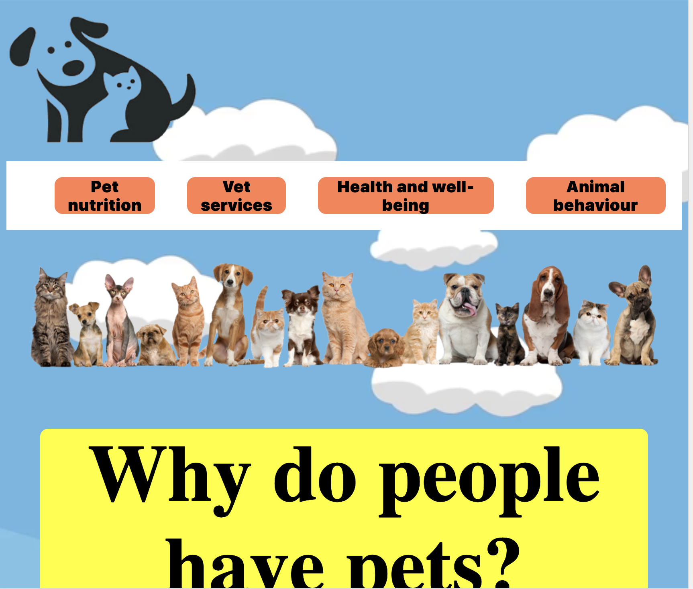

CSS SKILLS
CSS stands for Cascading Style Sheets with an emphasis placed on “Style.” While HTML is used to structure a web document (defining things like headlines and paragraphs, and allowing you to embed images, video, and other media), CSS comes through and specifies your document’s style—page layouts, colors, and fonts are all determined with CSS. Think of HTML as the foundation (every house has one), and CSS as the aesthetic choices (there’s a big difference between a Victorian mansion and a mid-century modern home).
Below are two variations of a pet website to showcase the use of CSS. They will both shhow the variations in the approach neccesary to develop websites for different age groups.
